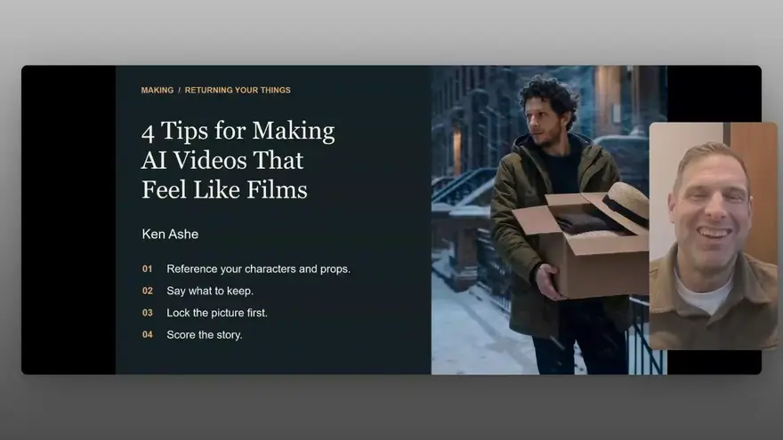

Returning Your Things
A two-minute short film made with AI-generated imagery and no dialogue. I wanted to see whether I could tell a whole story with only pictures and music.
Design concept. Round 4. Not the live KenAshe.ai. Review page
AI creator and builder
Making sense of AI. Making things with it.
I explain AI in plain English and put it to work on real projects, from apps and videos to new business ideas. Follow along to learn something useful and see what I try next.

Latest video · Nov 25, 2026
I built an autonomous AI blog that researches, writes, reviews and publishes articles without human intervention.
A two-minute short film made with AI-generated imagery and no dialogue. I wanted to see whether I could tell a whole story with only pictures and music.

I gave two AI agents their own crypto wallets and let one buy a service from the other. One real purchase, start to finish, that anyone can look up and check.
An AI agent that researches a topic, checks the facts, writes the script and produces an explainer video with a virtual presenter. I tested it on a real explainer that I published.



I spent about twenty years in finance and in project and product roles, and I’m a CPA and a PMP. Then I left corporate work to make things with AI and explain what I learn along the way.
This site is where the videos, projects and writing live. I also run Lucky Domains, which is a separate business.